Développement d'un réseau neuronal pour classfication les textes d'auteur
Technologies utilisées: Python, PyTorch, BERT, XLM-RoBERTa, numpy, scikit-learn, tkinter, PyCharm
Plus de détails techniques ont été ajoutés, lisez-les si cela vous intéresse ! Sinon, vous pouvez revenir à la « Version Simplifiée » à tout moment !
Introduction
Il s'agissait de mon travail de qualification, nécessaire pour obtenir un diplôme (licence). À l'origine, il s'agissait d'un travail de cours dont l'idée était de développer un réseau neuronal capable de classer des textes donnés par auteur, en tenant compte de leurs caractéristiques stylistiques et linguistiques. Il utilise un ensemble de données que j'ai créé moi-même à partir de textes d'auteurs classiques disponibles sur Internet. À l'origine, seul BERT était utilisé pour les textes en anglais.
Le travail de qualification a été amélioré grâce à l'utilisation de XLM-RoBERTa, qui fonctionne avec des traductions de textes en anglais et en ukrainien. De plus, la création d'une application logicielle a été ajoutée. Des textes d'auteurs suivants ont été utilisés :
- ● Shakespeare
- ● Shevchenko
- ● Lesya Ukrainka
- ● Bradbury
- ● Dickens
- ● Franko
- ● Orwell
Tout d'abord, une analyse des données a été effectuée afin de comprendre leur volume, leur qualité et les caractéristiques de chaque auteur et leur style. Ensuite, les données ont été préparées pour l'entraînement et le test du modèle. Puis, un modèle de réseau neuronal a été développé à l'aide du langage de programmation Python et d'autres outils. Le modèle a été entraîné sur des textes, divisés en échantillons d'entraînement et de validation.
Ensuite, des méthodes d'évaluation du modèle ont été utilisées pour évaluer les résultats. Les tests du modèle ont été effectués sur des textes que le modèle n'avait jamais vus. Après cela, une application a été créée avec une interface simple, afin que l'utilisateur puisse interagir confortablement avec le modèle.
À la fin du travail, une analyse détaillée des résultats a été effectuée et j'ai tiré des conclusions en fixant des objectifs possibles pour les orientations futures du développement.
Ensemble de données
Comme mentionné dans l'introduction, j'ai créé l'ensemble de données qui a été utilisé pendant le projet. Pour cela, j'ai recherché sur Internet les textes librement accessibles des auteurs mentionnés. Leurs différents travaux en anglais ont été enregistrés dans des fichiers txt, dans leurs propres répertoires.
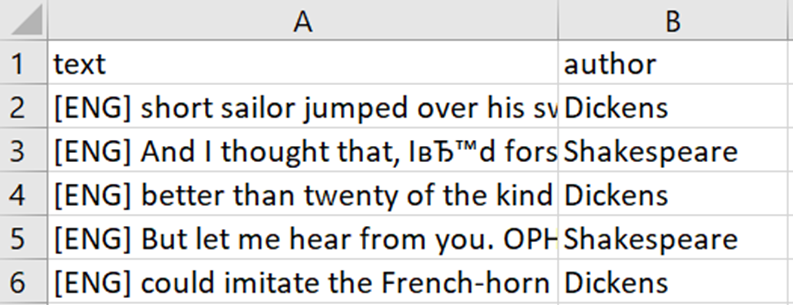
Colonne 1 : lignes de texte par auteurs
Colonne 2 : nom de l'auteur du texte
Après cela, j'ai trouvé des versions ukrainiennes des textes et je les ai également enregistrées. Afin d'automatiser le processus, un programme a été créé pour séparer tous les textes fournis par tous les auteurs dans des fichiers CSV à des fins de formation et de validation. Certains fichiers ont été séparés afin de pouvoir les utiliser lors des tests du modèle.
Tous les textes ont été marqués [ENG] ou [UKR] afin de simplifier le travail.
PyTorch Image Segmentation Models
Il s'agit d'une extension de la bibliothèque PyTorch conçue pour travailler avec des images dans le cadre de tâches de vision par ordinateur et de traitement d'images. Cette extension fournit un large éventail d'outils et de fonctions pour le traitement, l'augmentation, la visualisation et l'évaluation des images. PyTorch Image comprend une variété de modules et de classes de traitement d'images, tels que des transformations, des ensembles de données, des modèles, des fonctions de perte et des optimiseurs. L'utilisation de cette extension simplifie le développement et l'entraînement de modèles de vision par ordinateur dans l'environnement PyTorch.
Préparation mathématiques
La tâche posée de classification des textes rédigés est un problème de classification multi-classes, où chaque texte x appartient à l'un des auteurs C, c'est-à-dire à l'une des classes. L'objectif est de construire une fonction de prédiction qui maximise la probabilité de classer correctement un texte pour tous les textes du jeu de données.
Tous les textes saisis ont été traités par le tokenizer XLM-RoBERTa conformément à sa technologie.
Une couche a été ajoutée à la sortie du modèle afin de convertir les états cachés en logits, c'est-à-dire la sortie brute du modèle avant qu'elle ne soit convertie en probabilité. Une fonction de perte a également été utilisée dans le projet, et l'optimisation des poids a été réalisée par l'algorithme AdamW à l'aide de la descente de gradient.
Pour évaluer le modèle, j'ai utilisé le F1-score, une méthode de classification qui combine précision et rappel. Elle s'est avérée très utile, d'autant plus qu'elle est particulièrement efficace lorsque les données sont déséquilibrées. Sa formule est la suivante :
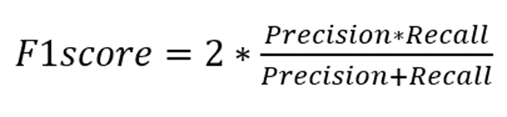
Formule du F1-score
La précision correspond au nombre de cas positifs prédits par le modèle qui sont effectivement corrects. Le rappel correspond au nombre de cas positifs réels que le modèle a correctement identifiés.
PyTorch
PyTorch est un logiciel open source dédié à l'apprentissage automatique et à l'apprentissage profond. Il fournit une large gamme d'outils pour la mise en œuvre et l'entraînement de réseaux neuronaux.
Dans le cadre de ce projet, PyTorch a été utilisé pour créer et entraîner un modèle de classification basé sur BERT. Il a été utilisé pour initialiser le modèle : utilisation de classes intégrées pour charger BERT et le configurer pour la classification des classes ; optimisation avec mise à jour automatique des poids du modèle et différenciation automatique.
PyTorch a fourni la flexibilité et l'efficacité nécessaires pour travailler avec de grandes quantités de données textuelles, ce qui en a fait l'outil le plus important dans la mise en œuvre de ce projet.
BERT
BERT, ou « Bidirectional Encoder Representations from Transformers », est un modèle innovant de traitement du langage naturel qui utilise l'analyse bidirectionnelle du texte pour prendre en compte le contexte des deux côtés d'un mot. BERT est l'un des outils les plus populaires dans le domaine du traitement du langage naturel (NLP) et a démontré une grande précision dans les tâches de classification de texte.
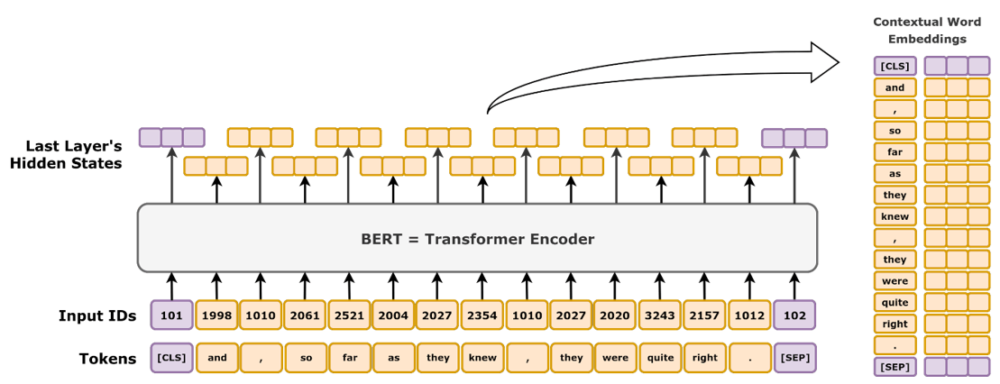
Schéma de haut niveau du BERT
XLM-RoBERTa
XLM-RoBERTa est un modèle multilingue qui a été entraîné sur 100 langues différentes, dont l'ukrainien. Il utilise les techniques de RoBERTa, mais n'applique pas l'objectif de modélisation linguistique translationnelle. Au lieu de cela, il applique uniquement la tâche de modélisation par masquage à des phrases provenant d'une seule langue.
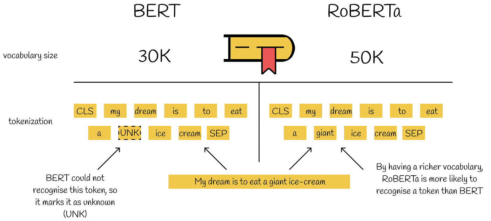
BERT et RoBERTa fonctionnent
Le modèle RoBERTa lui-même (Robustly Optimized BERT Pre-training Approach) est basé sur le modèle BERT et modifie les hyperparamètres clés, s'entraînant avec des mini-lots et une vitesse d'entraînement nettement plus importants. Le modèle a été entraîné sur un ensemble de données de 160 Go de texte, soit environ 10 fois plus que l'ensemble de données utilisé pour entraîner BERT.
Dans ce projet, XLM-RoBERTa a servi de base pour classer les textes par auteur. Le modèle a été téléchargé depuis la bibliothèque Hugging Face et adapté à la tâche du projet. Les principales étapes de l'utilisation de XLM-RoBERTa ont été la tokenisation du texte, en tenant compte du contexte des textes fournis, leur classification - une couche entièrement connectée a été ajoutée à la sortie de XLM-RoBERTa, qui prédit la probabilité que le texte appartienne à chaque classe.
Bien qu'elles ne soient pas vraiment nécessaires, des étiquettes linguistiques ont été utilisées dans le projet, sous forme de petites « indications » telles que [ENG] et [UKR], afin de permettre au modèle de mieux prendre en compte les différences stylistiques et grammaticales. Elles ont également permis d'éviter que le modèle ne détermine incorrectement la langue ou ne confonde les traductions, tout en augmentant la stabilité lors de l'entraînement sur des données mixtes et le contrôle global du modèle.
Tkinter
Tkinter est une bibliothèque d'interface utilisateur graphique multiplateforme basée sur les outils Tk, largement utilisée dans le monde GNU/Linux, également portée vers et pour Windows, distribuée en open source. Elle fait partie de la bibliothèque standard Python pour la création d'interfaces graphiques.
Dans le cadre de ce projet, la bibliothèque a été utilisée pour créer une interface permettant d'interagir avec le modèle de classification des auteurs de textes. L'interface permet à l'utilisateur : de saisir du texte ; de sélectionner la langue du texte dans une liste ; et d'obtenir le résultat de la classification, à savoir le nom de l'auteur prédit.
Réalisation
Étant donné que le projet a débuté par des travaux pratiques utilisant uniquement BERT, avant de décider et de confirmer le thème du travail de qualification, l'ensemble du projet a été divisé en trois étapes.
La première consistait à créer un prototype fonctionnel à l'aide de BERT. Elle a été réalisée par deux auteurs seulement : Shakespeare et Shevchenko. Elle avait pour but de tester les possibilités, de comprendre le fonctionnement de BERT et de déterminer la direction à suivre.
Il a été déterminé qu'il existait un risque de détérioration des performances du modèle en raison de la différence entre le nombre de textes des auteurs dans l'ensemble d'apprentissage, et une optimisation a également été effectuée afin d'accélérer le processus d'apprentissage du modèle.
La deuxième étape était la dernière pour les travaux pratiques. Sur la base de l'expérience acquise lors de la réalisation du prototype et de son analyse, le projet a été développé davantage avec l'ajout de tous les autres auteurs spécifiés (à l'exception de Lesya Ukrainka) et de leurs textes en anglais. Le seuil de recyclage a été déterminé, des erreurs dans la classification des textes ont été détectées et l'optimisation a été améliorée, car pendant son fonctionnement, le programme cessait de fonctionner en raison d'une erreur liée à la taille importante des données d'apprentissage.
Tous les diagrammes de classes de cette partie sont présentés ci-dessous :
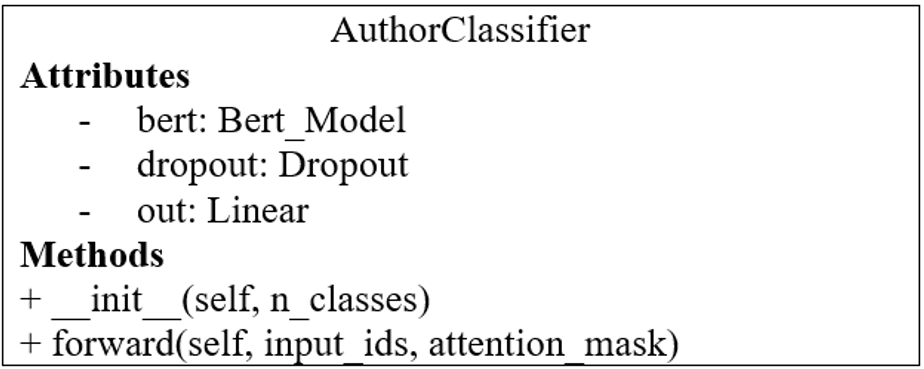
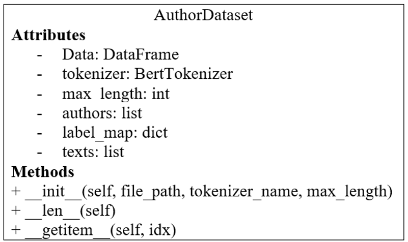
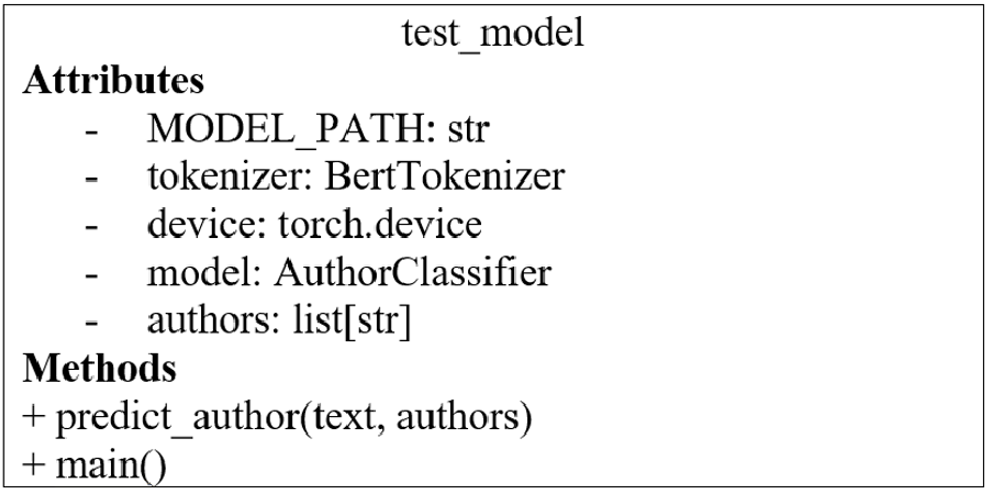
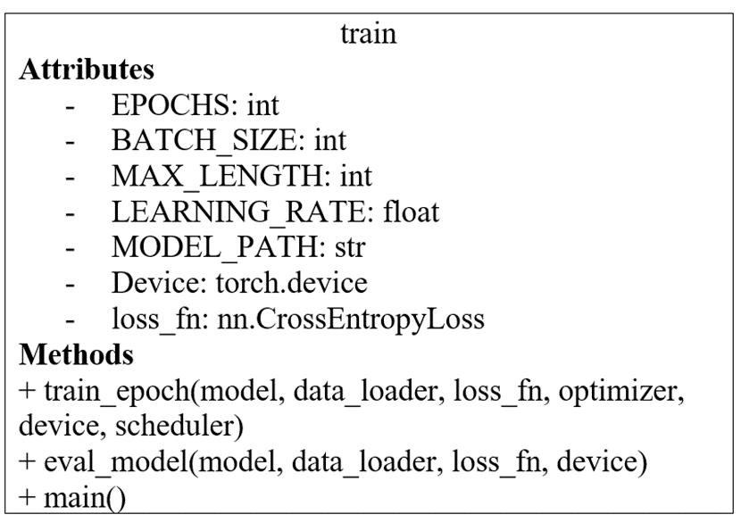
Diagrammes de classes du projet utilisant uniquement BERT
Après avoir confirmé le thème du travail de qualification, j'ai élargi le projet en y ajoutant la possibilité de former un modèle capable de traiter des textes dans différentes langues, en me fixant comme objectif l'ukrainien.
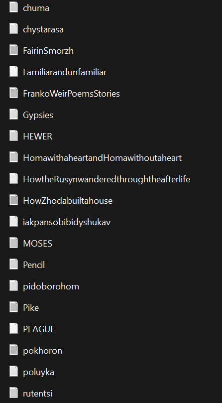
Œuvres préparées par Franco
Dans la foulée, le projet a été développé davantage : des textes supplémentaires en deux langues ont été ajoutés, des marqueurs linguistiques ont été ajoutés et le modèle a été remplacé par XLM-RoBERTa. Des modifications ont été apportées au code, des erreurs dans l'algorithme d'apprentissage ont été corrigées et l'optimisation et la collecte des données d'apprentissage ont été améliorées, ce qui a facilité le processus de développement. L'ensemble de données a également été élargi pour cette étape.
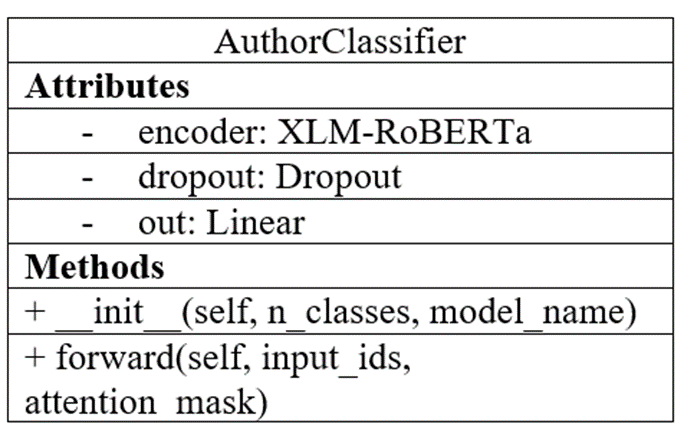
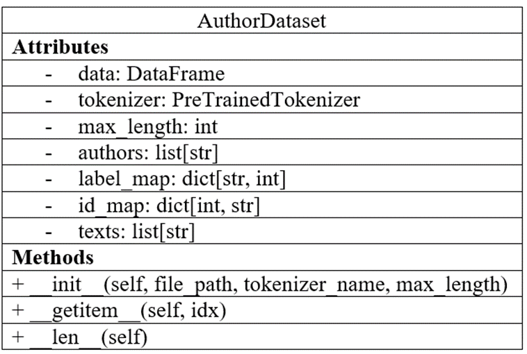
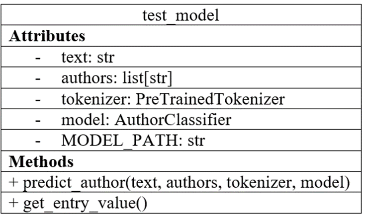
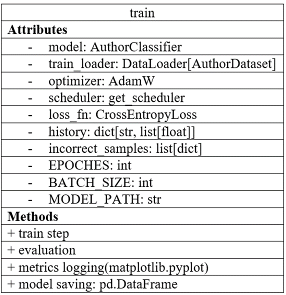
Diagrammes de classes finaux du projet
Approfondissons les détails de cette dernière étape.
Le fichier model. Il dispose d'une classe AuthorClassifier qui est une classe de réseau neuronal permettant de classer les textes rédigés. Il utilise le modèle de transformateur XLM-RoBERTa. Le modèle est chargé à partir des poids pré-entraînés de Hugging Face.
Ensuite, il contient une couche de régularisation Dropout (avec une probabilité de 0,3) qui empêche le surajustement. Avec une couche linéaire finale qui transforme les vecteurs cachés de sortie du transformateur en logits. Les logits peuvent être considérés comme des valeurs pour chaque classe (c'est-à-dire l'auteur). Renvoie la couche de sortie avec le nombre de classes. En raison de son architecture, la classe ne nécessite pas d'extraction manuelle des caractéristiques et peut apprendre de manière indépendante les dépendances et les modèles dans le texte.
Le fichier dataset. La classe AuthorDataset est nécessaire pour la préparation des données. Elle charge les données à partir de fichiers au format .csv, où chaque ligne contient des textes et des étiquettes d'auteur, puis utilise AutoTokenizer pour tokeniser les textes. La classe génère des input_ids (identifiants de tokens) et des attention_mask (masques d'attention) pour les transmettre au modèle. Les étiquettes d'auteur textuelles sont converties en valeurs numériques à l'aide de label_map.
Après traitement, les données sont renvoyées sous forme de tenseurs PyTorch, qui contiennent des masques d'attention, des étiquettes numériques d'auteur, des textes tokenisés et des textes originaux. Les textes originaux sont utiles ici pour l'analyse des erreurs pendant les tests.
Le fichier train. C'est ici que le cycle complet d'entraînement du modèle est mis en œuvre. Tout d'abord, les paramètres de base tels que le nombre d'époches d'entraînement, la taille des lots, la longueur maximale du texte et le taux d'apprentissage sont définis, ainsi que les chemins d'accès aux échantillons de test et d'entraînement. Pour l'optimisation, AdamW a été utilisé, un optimiseur spécialement conçu pour les modèles de transformateurs, qui dispose d'un planificateur supplémentaire.
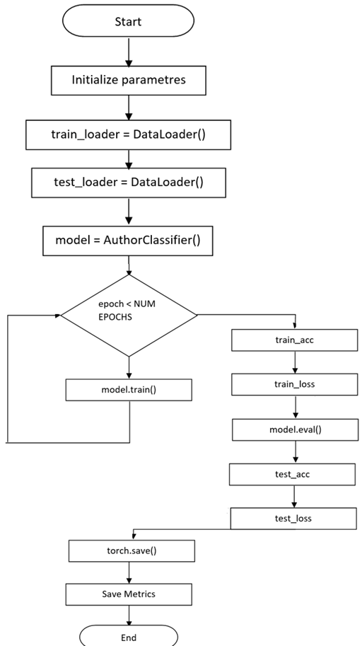
Organigramme de l'algorithme d'apprentissage du modèle
Une fois le modèle initialisé, les processus suivants se déroulent à chaque cycle d'apprentissage : passage en avant, calcul de la perte à l'aide de CrossEntropyLoss, passage en arrière et mise à jour des poids.
Le passage vers l'avant est le processus par lequel les données sont transmises à l'entrée du modèle (dans ce projet, il s'agit de textes tokenisés), après quoi le modèle les fait passer à travers des couches, telles que la couche Dropout mentionnée ci-dessus, et les logits sont obtenus comme résultat.
Comme nous connaissons l'auteur réel de chaque texte, nous pouvons comparer la prédiction du modèle, les logits obtenus, avec nos étiquettes correctes. Pour ce faire, pendant l'entraînement, nous utilisons la fonction de perte CrossEntropyLoss, qui indique la qualité du fonctionnement du modèle. Nous voulons obtenir une valeur plus petite.
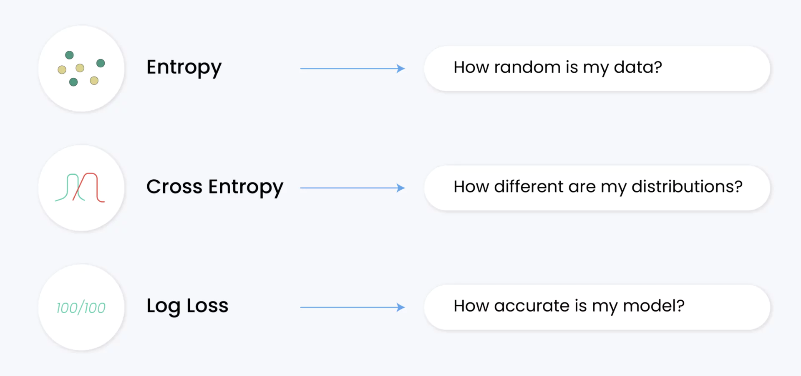
La Cross Entropy Loss est une fonction utilisée pour mesurer les performances d'un modèle de classification.
Il mesure la différence entre la distribution de probabilité découverte d'un modèle de classification et les valeurs prédites.
Le backtracking calcule les dérivées (gradients) pour chaque poids du modèle afin de comprendre comment exactement les poids doivent être ajustés pour obtenir une meilleure prédiction la prochaine fois. Lors de la mise à jour des poids, un optimiseur est utilisé, qui modifie les poids du modèle après le calcul. Cela se fait à chaque étape (lot) et est répété tout au long des époques.
Après chaque époque, model.eval (évaluation du modèle) a lieu. Le modèle est évalué sur l'échantillon de test, et les textes mal classés sont également analysés. Tout au long du processus, les métriques sont stockées, et une fois la formation terminée, elles sont converties en graphiques et stockées dans un fichier. Cela est nécessaire pour faciliter et accélérer l'analyse du modèle. Les graphiques permettent d'examiner visuellement le processus d'apprentissage. À la fin, le modèle est également enregistré au format .pth afin de pouvoir être utilisé dans l'interface de test.
La partie du projet chargée de tester le modèle après la formation a reçu une interface simple au lieu d'interagir avec une zone de texte dans le code. Une zone de texte pour saisir du texte, une liste permettant de sélectionner la langue du texte, un emplacement pour afficher le résultat et des boutons pour interagir ont été créés. Elle a été écrite en python à l'aide de la bibliothèque Tkinter.
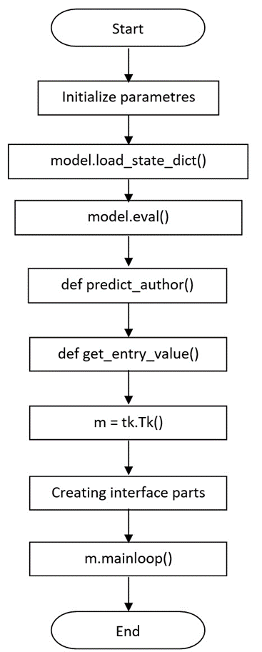
Organigramme de l'algorithme de test du modèle
En gros, le fichier test_model charge le modèle qui a été enregistré après l'entraînement. La fonction predict_author effectue la prédiction de l'auteur pour le nouveau texte saisi dans le code qui doit être classé par auteur. Elle tokenise le texte, le transmet au modèle entraîné et à AuthorClassifier, puis renvoie la prédiction, c'est-à-dire le nom de l'auteur basé sur l'index de classe prédit.
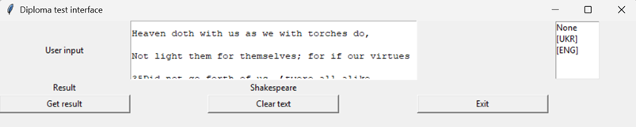
Texte saisi (auteur : Shakespeare) – Prédiction du modèle (résultat : Shakespeare)
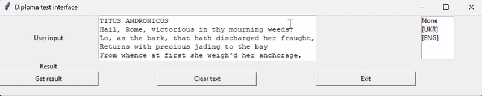
Animation du fonctionnement du programme
Les textes utilisés dans l'animation sont « Titus Andronicus » de Shakespeare et « À mon piano » de Lesya Ukrainka.
Résultats
Le prototype a été entraîné pendant environ 20 minutes. La première version basée sur BERT a été entraînée pendant environ 1 heure. La version finale du modèle a été entraînée pendant 6 heures et 20 minutes, au cours de 5 époques.
Cependant, comme le montre le graphique ci-dessous, après 2 ou 3 époques, un arrêt précoce de l'entraînement pourrait être utilisé, ce qui réduirait le temps d'entraînement sans en compromettre la qualité.
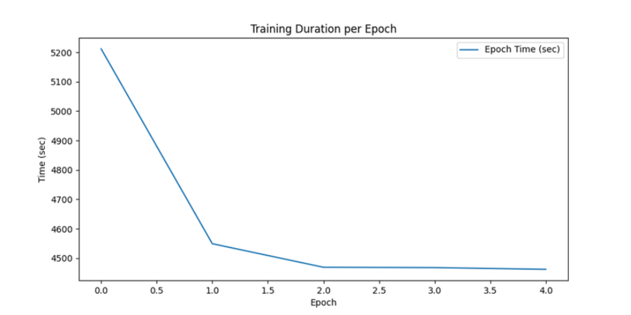
Graphique du temps d'entraînement en secondes par époque
Comme on peut le constater, pendant l'entraînement, la précision du train augmente régulièrement au cours des cinq époques, tandis que la précision du test augmente jusqu'à la quatrième époque, puis diminue légèrement au cours de la cinquième. Cela suggère que le modèle généralise bien et ne montre aucun signe de surajustement. Cependant, avec davantage d'époques d'entraînement, nous assisterions probablement à une dégradation de la qualité des données de test.
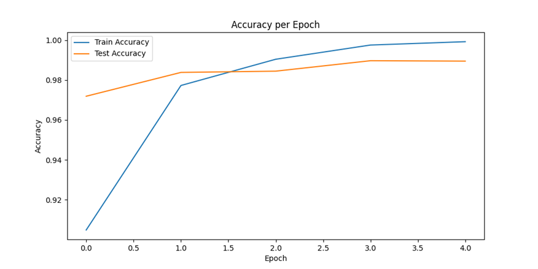
Graphique représentant la précision de l'ensemble d'entraînement et de test
Sur le graphique suivant, on constate que la perte d'entraînement diminue rapidement, ce qui est le signe d'un entraînement efficace. La perte de test diminue également, mais commence à augmenter légèrement au cours de la dernière époque. Cela indique généralement le début d'un surapprentissage, qui aurait pu se produire si l'entraînement avait duré plus de 5 époques.
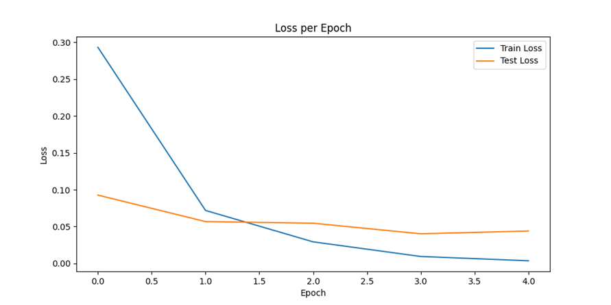
Graphique des pertes pour les ensembles d'entraînement et de test
Après analyse des valeurs obtenues, il a été conclu que les œuvres de Shakespeare, Dickens et Orwell sont classées de manière idéale, puisque leur score f1 atteint 0,99. Pour Franko et Shevchenko, il est légèrement inférieur, environ 0,97, ce qui est un signe de haute qualité de classification.
La valeur la plus faible concerne les textes de Lesya Ukrainka, en raison du nombre réduit de textes fournis dans l'ensemble de données d'apprentissage. Cela signifie que l'ensemble de textes ukrainiens doit être élargi afin d'améliorer leur équilibre.
Ainsi, les résultats obtenus ont démontré la grande efficacité du modèle développé pour la tâche de classification des textes d'auteur. Même avec une quantité limitée de données, le modèle est capable de généralisation, offrant une grande précision.
Une interface de base permettant d'interagir avec le modèle a été créée. Elle remplit bien sa fonction, mais pourrait être améliorée, tant au niveau de ses fonctionnalités que de sa conception.
En théorie, les résultats du projet ont une valeur pratique dans les domaines de l'automatisation de l'analyse de texte, en particulier pour les tâches liées au droit d'auteur et au plagiat.